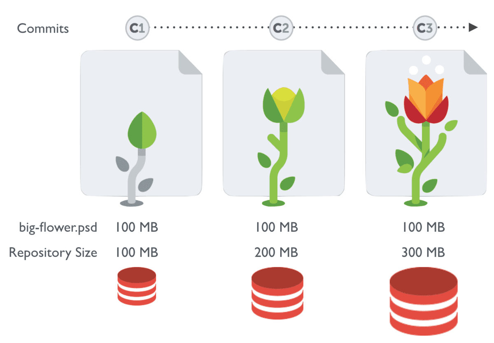
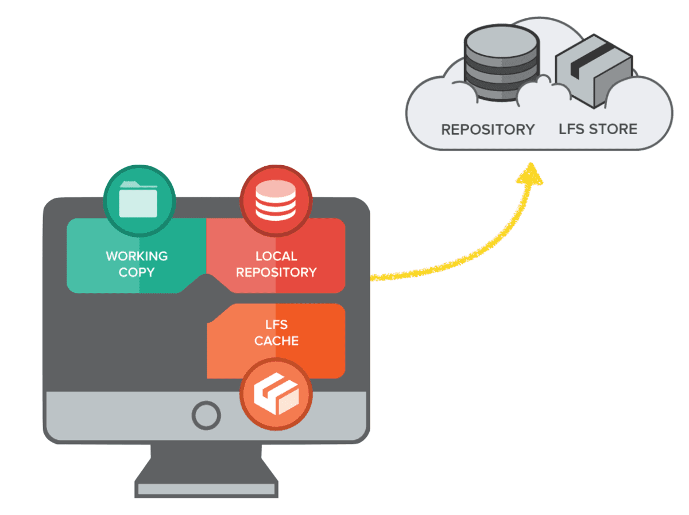

Mdbook电子书发布工具使用说明
使用要点
基本结构
tree -L 2 ─╯
.
├── README.md # 项目基本说明
├── bin # mdbook可执行文件
│ └── mdbook
├── book.toml # 书籍基本信息配置
├── mermaid-init.js # mermaid用到的js文件
├── mermaid.min.js # mermaid用到的js文件
├── mytheme # 书籍用到的主题
│ ├── FontAwesome
│ ├── ayu-highlight.css
│ ├── book.js
│ ├── clipboard.min.js
│ ├── css
│ ├── favicon.png
│ ├── favicon.svg
│ ├── fonts
│ ├── head.hbs
│ ├── header.hbs
│ ├── highlight.css
│ ├── highlight.js
│ ├── index.hbs
│ ├── mod.rs
│ ├── playground_editor
│ ├── redirect.hbs
│ ├── searcher
│ └── tomorrow-night.css
├── scripts # 一些文章里面提及的脚本文件
│ ├── anki_md_js
│ ├── gh-md-toc
│ ├── toc_generator.sh
│ ├── update_toc
│ └── update_toc_raw
├── smart-anchor.js
└── src # 书籍内容主体
├── SUMMARY.md # 目录页，唯一可以添加跳转的地方
├── app_deepin
├── app_extensions
├── app_plugin_list.md
├── imgs
├── macos_essentials.md
├── macos_ios_tips.md
├── overview.md
└── shortcuts_keymaps_config.md
13 directories, 29 files
Summary
要注意，mdbook中所有文章跳转链接只能放在Summary中。
图片资源与git lfs
git lfs使用场景

Git LFS 是 Github 开发的一个 Git 的扩展，用于实现 Git 对大文件的支持. 比如在游戏开发过程中,设计资源占用了很大一部分空间. 像png,psd等文件是二进制(blob) 的,体积也很庞大.但git的diff/patch等是基于文件行的.对于二进制文件来说. git需要存储每次commit的改动.每次当二进制文件修改,发生变化的时候. 都会产生额外的提交量.导致clone和pull的数据量大增.在线仓库的体积也会迅速增长.

LFS(Large File Storage) 就是为了解决这一问题而产生的工具.
- 它将你所标记的大文件保存至另外的仓库,而在主仓库仅保留其轻量级指针.
- 那么在你检出版本时,根据指针的变化情况下更新对应的大文件.而不是在本地保存所有版本的大文件

对mdbook的影响
因为mdbook默认是在src里面直接引用静态资源，所以如果用git lfs打开对应的资源存储就会导致发布后的github pages找不到静态资源。